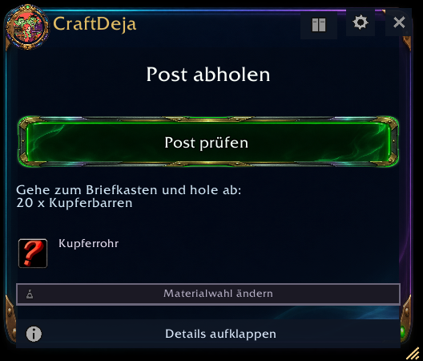
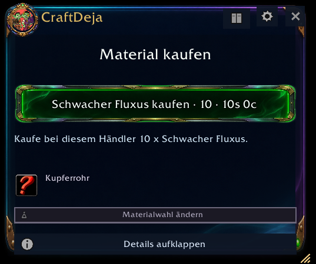

From Copper Bars to Copper Tubes
CraftDeja turns a profession target in World of Warcraft: Forever into a sequence of actions you can follow in-game. Check what you need, see the next stop, then prepare the craft when your materials and station are ready.
WoWLua simulation · German interface






Follow an Engineering order
This example starts at Engineering 65 with a target of 75. The sample plan calls for 10 Copper Tubes, using 20 Copper Bars and 10 Weak Flux. Actual counts depend on your plan and inventory.
- Auction house. Hand the shopping list to Auctionator. Review the quantity and final offer before confirming the purchase.
- Mailbox. Collect the purchased bars. The guide checks what is still missing before suggesting the next action.
- Vendor. If a known vendor is the chosen source, visit them and review the Weak Flux quantity and price before buying.
- Anvil and crafting. Meet the recipe requirements, prepare the batch in the guide, then click the original crafting button. Check the updated skill and follow the next action.
Use the same guide on your next order
Available auction house prices and known vendor prices inform the route. The workshop also lists known recipe sources and lets you set a refill target for consumables you use regularly.
Installation and requirements
Beta channel: Stock Targets in this description are available in 3.9.0-beta.26. Select that build from Files or enable beta updates in the app.
Install CraftDeja for World of Warcraft: Forever 1.60.1 through the CurseForge app for that installation. For a manual installation, extract the CraftDeja folder into the Forever client's Interface/AddOns directory and enable it from the character selection screen. The addon UI supports English and German.
Auctionator is optional and supports the shopping-list handoff and price lookup. TradeSkillMaster is optional and can supply a stored market price. CraftDeja can also use known vendor prices. Check current offers before buying.
Start in game
- Open a supported profession and choose a skill target in the workshop.
- Review the route and its estimated costs, then follow the compact guide.
- Use
/cdjfor the guide,/cdj dashboardfor the workshop and/cdj stockfor stock targets.
FAQ
Which professions are supported? Alchemy, Blacksmithing, Cooking, Enchanting, Engineering, First Aid, Leatherworking, Tailoring and Mining recipes such as smelting. Poisons is available to rogues who have unlocked it in the client.
Will it purchase or craft for me? You confirm your purchases and trainer actions. You collect mail and move bank items as instructed. CraftDeja can prepare a batch and you start it with the game's original crafting button.
Can I rely on the price and route estimates? Prices and skill-up chances can change. Unknown prices remain unknown. Review the final offer and use the route as a planning estimate.
Why is a learned recipe missing from Stock Targets? Open that profession on the current character so CraftDeja can read its recipe list. Eligible vendor items can also be selected through the vendor view.
Help and bug reports
Use CraftDeja’s GitHub issue tracker for questions and bug reports. Include the addon and client versions, language, profession, skill and target, the last action you took, and what you expected to happen. Run /cdj log and include the relevant diagnostic output. Crop or redact unrelated chat and character details.